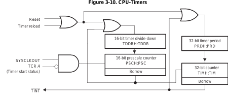

1. SE 423: Introduction to MechatronicsLecture 2: PeripheralsMarius Juston
Monday, January 26th, 2026
Speaker notes
Well I hope that most of your classes have been cancled or are on Zoom
Did all of you get my Canvas email or do I need to it through email? Or announcements?
2. Questions?
How was the first lab? Enjoyed it?
Speaker notes
Office
3. Office Hours
Times:
- Monday: 4-6 PM, Samuel
- Tuesday: 11-1 PM, Lakshmi
- Tuesday: 1-3 PM, Neel
- Tuesday: 2-5 PM, Dan & Marius
- There to help with setting up CodeComposer ( not necessary but helpful for homeworks ), finishing the solder, getting checked off for the homeworks, labs or LabVIEW
- Close to deadlines it will be busy so be sure to come in early!
4. Due Dates
Lab:
- Starting Lab 1 this week, will be using C so be sure to be prepared!
- Do Exercise 1 of Homework 1 to get started in C.
-
- You cannot use CodeComposer for that. You can just use an online C compile.
- Lab 1 is a 1-week lab, some are longer
Homeworks:
- All check-offs for homework 1 are due February 3, 5PM
-
- Questions 2, 3, 5, 7, 8, 9 and 10 need to be checked-off by instructors / TAs
- Answers and code submissions for homework 1 are due February 4, 9AM
- No late acceptations, since these are individual!
- Soldering is Exercise 2 of Homework 1.
LabVIEW:
- All check-offs for LabVIEW 1 are due February 5, 5PM
5. Semester Project
Thursday May 14th, 11AM – 2PM
Last day of Finals!!!
( yes, I know that’s annoying)
Attendance is mandatory!!
Speaker notes
Office
6. Semester Project
Website
You will be creating a Hackster.io website to show what you have done by the end of the semester to showcase to everyone.
- Show the video working,
- Put code,
- Show any other cool stuff you do!
You are posting this to be publicly visible, so put your best effort in doing this. You can show the work for interviews, etc…
7. Registers
8. Memory-Mapped I/O
The CPU only knows one thing: memory addresses
On the TMS320F2837xD:
- RAM has addresses
- Flash has addresses
- Peripherals also have addresses
This is called Memory-Mapped I/O (MMIO)
A peripheral is a hardware module whose control and status registers are mapped to fixed memory addresses, allowing the CPU to configure and control hardware by reading from and writing to memory.
9. System and Peripheral Registers
Peripheral:
A Peripheral is a hardware device with a specific address in memory that it writes data to and/or reads data from.
All peripherals can be described by an offset from the Peripheral Base Address.
On the TMS320F2837xD, registers are typically 32-bits or 16-bit wide
Each bit usually represents to:
- A hardware switch (ON / OFF)
- A configuration option
- A hardware status flag ( Error code, OK )
10. Peripheral Base Address
TI groups peripherals into address regions.
For example:
- GPIO register live in one address range
- Timers in another
- ePWM in another
- ADC (Analog to Digital Converters ) in another
- Etc…
Each register is located at:
Peripheral Base Address + Register Offset
You do not need to calculate these addresses manually; TI provides C structures and header files that do this manually.
EPwm1Regs.TBCTL.bit.CLKDIV = 1;
11. System Peripheral
System registers control the behavior of the CPU itself
These registers affect the entire chip. These system registers are protected.
These can modify:
- Clock configuration
- Resets
- Peripheral interrupts
- Memory configuration
- Timer
Full list is available in Table 3-17 - System Control Base Address Table
12. EALLOW / EDIS
Some registers are protected to prevent accidental damage ( most / all system peripherals ).
Thus, an additional layer of protection is allowed for accidental writes ( memory leaked code or otherwise ).
- EALLOW: unlocks protected registers
- EDIS: locks them again
EALLOW; // This is needed to write to EALLOW protected registers
PieVectTable.TIMER0_INT = &cpu_timer0_isr;
PieVectTable.TIMER1_INT = &cpu_timer1_isr;
PieVectTable.TIMER2_INT = &cpu_timer2_isr;
PieVectTable.EMIF_ERROR_INT = &SWI_isr;
EDIS; // This is needed to disable write to EALLOW protected registers
13. Peripheral Registers
Peripheral registers control individual hardware modules. Usually do not have any write protection
Examples:
- GPIO (General Purpose Input-Output)
- Timers
- ADC (Analog-to-Digital Converter)
- PWM (Pulse Width Modulation)
- SPI (Serial Peripheral Interface)
Each peripheral has a Read (DAT), Write (SET), Clear (CLEAR) and Toggle (TOGGLE) register.
GpioDataRegs.GPBDAT.bit.GPIO37; // Do not use to set
GpioDataRegs.GPBSET.bit.GPIO37 = 1; // Sets GPIO37 to 1
GpioDataRegs.GPBCLEAR.bit.GPIO37 = 1; // Sets GPIO37 to 0
GpioDataRegs.GPBTOGGLE.bit.GPIO37 = 1; // Sets GPIO37 to 0->1
14. Using DAT
There are problems that arise from writing directly to DAT
Writing to DAT requires,
- Read
- Modify
- Write
An interrupt ( code that runs on certain events ) can run between these steps and corrupt data
SET / CLEAR registers avoid this by being atomic hardware operations.
Atomic operations guarantee that a variable will be locked during the operations and cannot be modified by anyone else during that time.
15. Digital I/O (GPIO)
Each physical pin can serve multiple functions
- GPIO
- PWM
- SPI
- SCI
- CAN
You must first select the function
GPIO_SetupPinMux(31, GPIO_MUX_CPU1, 0);
GPIO_SetupPinOptions(31, GPIO_OUTPUT, GPIO_PUSHPULL);
16. Bits
17. Binary
The CPU only reads binary, 1s or 0s; however, for humans it is difficult to understand long string of numbers.
A 32-bit register could be represented as such with 32 bits (unsigned 3,357,083,684):
int32_t x = 0b110010000001100100000100000100100;
What is a potential problem?
Prone to make mistakes if you need to manually type this out! For example, there are 33-bits above, not 32!
Why not use Decimal system? Not as simple to convert from decimal to binary!
18. Hexadecimal
Instead of base 10, let’s explore base 16, i.e., hexadecimal base system
Very easy to convert binary to hex (0-9 then A-F):
| Binary | Hexidecimal | Decimal |
|---|---|---|
| 0000 | 0 | 0 |
| 0001 | 1 | 1 |
| 1010 | A | 10 |
| 1111 | F | 15 |
Every 4-bits = 1 hex value, makes things much easier to compress, much easier to look at!
int32_t x = 0xC8190824;
int16_t x = 0x0824;
Windows Calculator set to programming mode can easily do the conversion!
19. Bits, Bit Positions and Masks
Bit number starts at 0
Bit 0 → 20
Bit 1 → 21
Bit 5 → 25 = 32 = 0x20
Creating a bit shifting:
- Left shifting: x << n, shifts bits in x to the left by n. 0b01 << 1 = 0b10
- Right shifting: x >> n, shifts bits in x to the right by n. 0b10 >> 1 = 0b01
Commonly used to create bit “masks”:
int32_t bit5Mask = 1 << 5; // 0x20, sets only bit 5 to 1!
What are masks? What are they used for?
20. Bitwise Operations
AND (&) – Masking
if (reg & (1 << 3)) {
// Bit 3 is set
}
OR (|) – Setting Bits
reg |= (1 << 3);
NOT (~) – Clearing Bits
reg &= ~(1 << 3);
XOR (^) – Toggling Bits
reg ^= (1 << 3);
| REG | MASK | AND | OR | XOR |
|---|---|---|---|---|
| 0 | 0 | 0 | 0 | 0 |
| 0 | 1 | 0 | 1 | 1 |
| 1 | 0 | 0 | 1 | 1 |
| 1 | 1 | 1 | 1 | 0 |
| MASK | NOT |
|---|---|
| 0 | 1 |
| 1 | 0 |
21. Timers
22. What is a timer?
Just like a clock that you have; however, in hardware it is EXTREMELY important.
A timer is a hardware counter that:
- Counts clock cycles
- Triggers an interrupt when it reaches a specified condition
The TMS320F2837xD has 3 32-bit CPU timers.
- CPU-Timer0 and CPU-Timer1 can be used in user applications
- CPU-Timer2 is reserved for real-time operating system uses ( if not being uses in an operating system that uses this timer, it can used in the application).
These clocks run off the system’s internal clock (SYSCLK) (CPU-Timer2, has additional options)
System’s internal clock runs at 200 MHz
23. What is a timer?

OR
AND
NOT
Speaker notes
SYSCLKOUT is the system clock (e.g., 200 MHz).
TCR.4 is the Timer Control Register bit that enables or disables counting.
The timer only receives clock pulses when software sets the START bit. This is why timers do nothing until you explicitly enable them in software.
16-bit Divide-Down (TDDRH:TDDR)
This block divides the incoming clock frequency.
This allows the timer to operate at manageable speeds
16-bit Prescale Counter (PSCH:PSC)
This is an additional counter that:
Counts down
Generates a borrow when it underflows
That borrow is what advances the main 32-bit timer.
The prescaler slows time down before it reaches the main timer counter.
32-bit Period Register (PRDH:PRD)
This is the value the timer reloads from.
32-bit Counter (TIMH:TIM)
This is the actual counter:
Decrements every prescaled clock tick
When it reaches zero:
A borrow occurs
An interrupt is generated
The counter reloads from PRD
24. What is a timer?
YouTube video: CPU Timer Animation (Marius Juston)
https://youtu.be/AB0ehpoGNZU?si=qzp9HoeXxZYwsuXb
Speaker notes
SYSCLKOUT is the system clock (e.g., 200 MHz).
TCR.4 is the Timer Control Register bit that enables or disables counting.
The timer only receives clock pulses when software sets the START bit. This is why timers do nothing until you explicitly enable them in software.
16-bit Divide-Down (TDDRH:TDDR)
This block divides the incoming clock frequency.
This allows the timer to operate at manageable speeds
16-bit Prescale Counter (PSCH:PSC)
This is an additional counter that:
Counts down
Generates a borrow when it underflows
That borrow is what advances the main 32-bit timer.
The prescaler slows time down before it reaches the main timer counter.
32-bit Period Register (PRDH:PRD)
This is the value the timer reloads from.
32-bit Counter (TIMH:TIM)
This is the actual counter:
Decrements every prescaled clock tick
When it reaches zero:
A borrow occurs
An interrupt is generated
The counter reloads from PRD
25. What is a timer?
Why are there 2-counter blocks?
System clock: SYSCLKOUT = 200 MHz → Tclk = 2 ns
Problem is that the clock is too fast for software:
At 200 MHz:
- 1 ms requires: 200,000 clock ticks
- 10 ms requires: 2,000,000 clock ticks
Split the job into 2 counters:
- Prescaler Counter (PSC, TDDR) – Controls speed, defines a unit of time
- Main Timer Counter (TIM, PRD) – Controls duration, how much time should pass
One counter decides how fast time flows and the other decides how much time passes.
With a prescaler set to TTDR=199 for example, you now have that a single tick for the main timer counter represents a clean 1 μs, thus, to ensure that your timer runs every 10 ms you can set PRD = 10,000! Much simpler!
26. What is a timer?

Speaker notes
Timer 0
TINT0
INT1–INT12 via PIE
Timer 1
TINT1
INT13 (direct)
Timer 2
TINT2
INT14 (direct)
The Peripheral Interrupt Expansion (PIE) is an interrupt router.
It:
Takes many peripheral interrupts
Maps them to CPU interrupt vectors
Timer 0 is routed through the PIE because:
It is commonly used for application-level tasks
It supports prioritization and masking
Software Consequence
To use Timer 0:
Enable the timer interrupt
Enable the PIE group
Enable the CPU interrupt
Acknowledge the PIE inside the ISR
This makes Timer 0 ideal for:
Control loops
Scheduling
RTOS ticks
Timers 1 and 2 Bypass the PIE
Timer 1 → INT13 Timer 2 → INT14
These are dedicated CPU interrupts.
Why?
They are intended for:
High-priority system tasks
Real-time services
Deterministic timing
They:
Have lower latency
Are simpler to configure
Are harder to misuse accidentally
27. What is a timer?
The timer controls:
- Control loop sampling rate ( user defined controller )
- Task scheduling
- PWM updates
Can control interrupt how often the software interrupts get called:
// Configure CPU-Timer 0, 1, and 2 to interrupt every given period:
// 200MHz CPU Freq, Period (in uSeconds)
ConfigCpuTimer(&CpuTimer0, LAUNCHPAD_CPU_FREQUENCY, 10000);
ConfigCpuTimer(&CpuTimer1, LAUNCHPAD_CPU_FREQUENCY, 20000);
ConfigCpuTimer(&CpuTimer2, LAUNCHPAD_CPU_FREQUENCY, 40000);